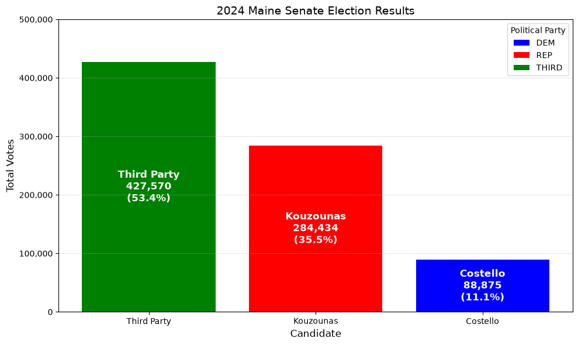
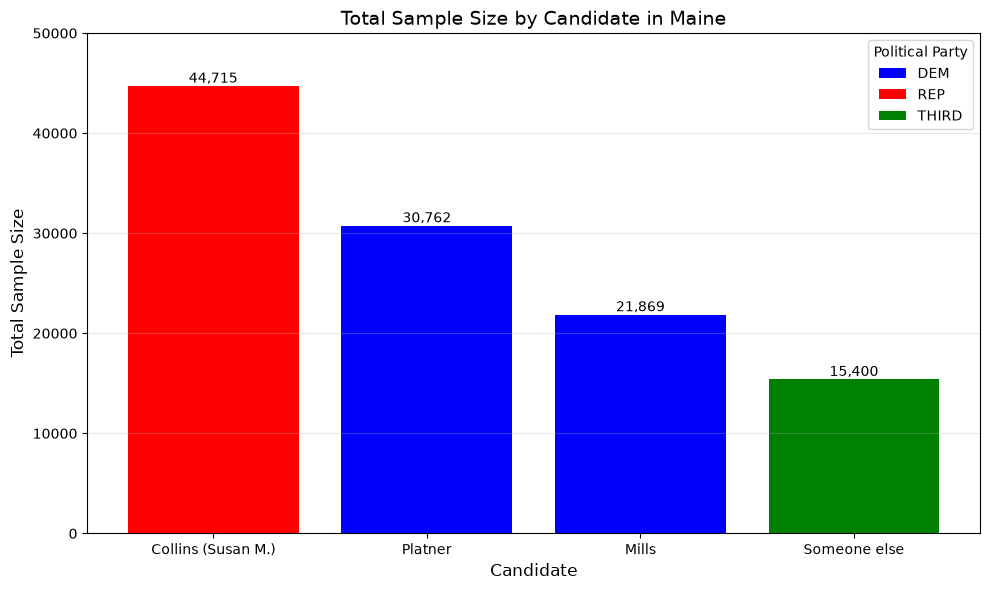
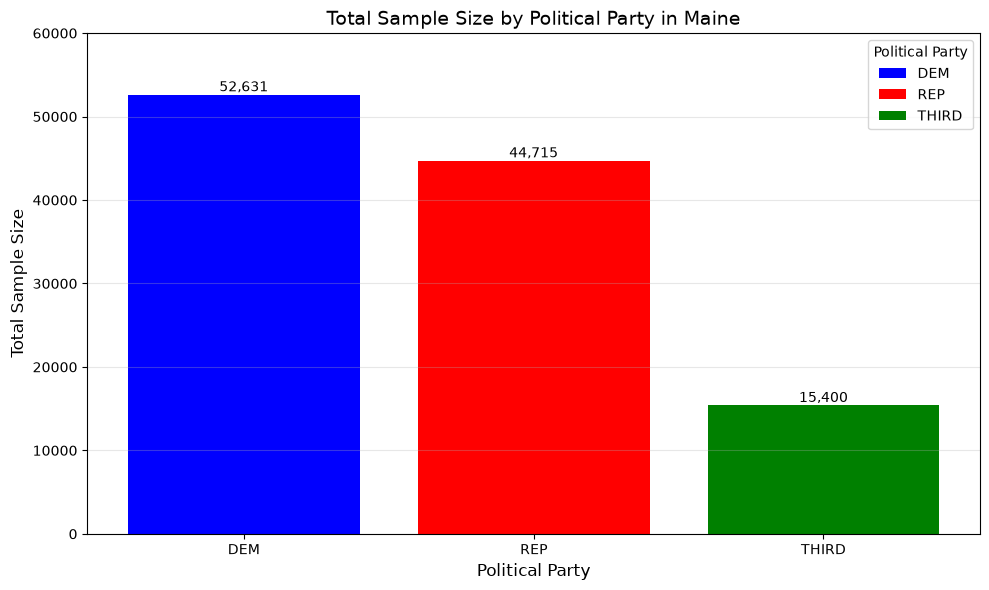
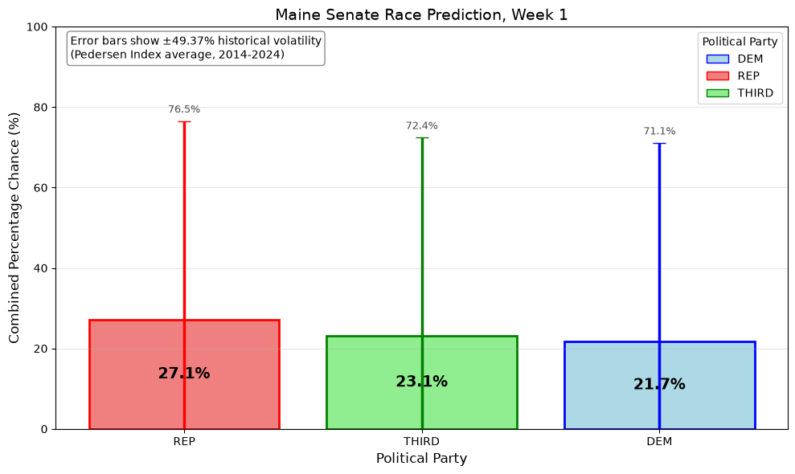

Maine Election Analysis#
Import Libraries#
from matplotlib.patches import Patch
import pandas as pd
import numpy as np
import matplotlib.pyplot as plt
data = pd.read_csv("senate.csv")
pedersen_data = pd.read_csv("maine_pedersen_index.csv")
Determine current week for election analysis#
Historical data results from the 2024 Maine Senate Race: Democrat, Republican, and Third Party#
# Use the following data for 2024 election results
dem_results = 88875
rep_results = 284434
third_party_results = 427570
dem_percentage = (dem_results / (dem_results + rep_results + third_party_results)) * 100
rep_percentage = (rep_results / (dem_results + rep_results + third_party_results)) * 100
third_party_percentage = (third_party_results / (dem_results + rep_results + third_party_results)) * 100
data_2024 = pd.DataFrame([{'Answer': 'Costello', 'Political Party': 'DEM', 'Results': dem_results, 'Percentage': dem_percentage},
{'Answer': 'Kouzounas', 'Political Party': 'REP', 'Results': rep_results, 'Percentage': rep_percentage},
{'Answer': 'Third Party', 'Political Party': 'NONE', 'Results': third_party_results, 'Percentage': third_party_percentage}])
# Sort by sample size (largest first)
data_2024 = data_2024.sort_values('Results', ascending=False)
# Clean index
data_2024.index = range(1, len(data_2024) + 1)
data_2024 = data_2024.head(3)
# Reassign the 'NONE' party to 'THIRD' as 'Third Party' for better clarity in the graph
alias_map = {
'NONE': 'THIRD'
}
# Define colors for each party
party_colors = {'DEM': 'blue', 'REP': 'red', 'NONE': 'green'}
# Define colors for each party in the graph's legend
legend_elements = [
Patch(facecolor='blue', label='DEM'),
Patch(facecolor='red', label='REP'),
Patch(facecolor='green', label=alias_map.get('NONE', 'THIRD'))
]
# Create bar chart
plt.figure(figsize=(10, 6))
# Create bars with party colors
for candidate in data_2024['Answer']:
# Get the party for this candidate
display_name = alias_map.get(candidate, candidate)
party = data_2024[data_2024['Answer'] == candidate]['Political Party'].iloc[0]
color = party_colors.get(party, 'gray')
# Get the results (votes)
results = data_2024[data_2024['Answer'] == candidate]['Results'].iloc[0]
# Create the bar
plt.bar(candidate, results, color=color)
# Add value labels INSIDE the bars (candidate name, votes, percentage)
for i, (candidate, results, percentage) in enumerate(zip(data_2024['Answer'],
data_2024['Results'],
data_2024['Percentage'])):
# Format votes with commas
votes_formatted = f"{results:,}"
# Create the label text with candidate name, votes, and percentage
label_text = f"{candidate}\n{votes_formatted}\n({percentage:.1f}%)"
# Place text inside the bar (centered, with some offset from bottom)
plt.text(i, results / 2, # Position at half the bar height
label_text,
ha='center',
va='center',
fontsize=12,
fontweight='bold',
color='white') # White text for contrast
plt.xlabel('Candidate', fontsize=12)
plt.ylabel('Total Votes', fontsize=12)
plt.title('2024 Maine Senate Election Results', fontsize=14)
# Format y-axis to show numbers with commas
plt.gca().yaxis.set_major_formatter(plt.FuncFormatter(lambda x, p: format(int(x), ',')))
plt.grid(axis='y', alpha=0.3)
# Set y-axis limit to ensure bars are fully visible
plt.ylim(0, 500000)
# Add legend
plt.legend(handles=legend_elements, title='Political Party', loc='upper right')
plt.tight_layout()
plt.show()

Data Results of Current Week’s Polls, by Candidate#
# Construct dataset by polling data sample size
# Rename columns
data = data.rename(columns={
'state':'State',
'sample_size':'Sample Size',
'party':'Political Party',
'answer':'Answer'
})
# Filter: Maine AND (DEM or REP or NONE)
data = data[(data['State'] == 'ME') & (data['Political Party'].isin(['DEM', 'REP', 'NONE']))]
# Remove unwanted answers, data that is not useful for analysis
unwanted = ["Don't know", "Refused", "No opinion"]
data = data[~data['Answer'].isin(unwanted)]
# Remove duplicates
data = data.drop_duplicates()
# Group by Answer and Political Party, summing Sample Size
df_aggregated = data.groupby(['Answer', 'Political Party'])['Sample Size'].sum().reset_index()
df_aggregated = df_aggregated.sort_values('Sample Size', ascending=False)
# Sort by sample size (largest first)
df_aggregated = df_aggregated.sort_values('Sample Size', ascending=False)
# Clean index
df_aggregated.index = range(1, len(df_aggregated) + 1)
df_aggregated = df_aggregated.head(4)
# Reassign the 'NONE' party to 'THIRD' as 'Third Party' for better clarity in the graph
alias_map = {
'NONE': 'THIRD',
}
# Define colors for each party
party_colors = {'DEM': 'blue', 'REP': 'red', 'NONE': 'green'}
# Define colors for each party in the graph's legend
# Check if third party has any sample size in the aggregated data
if 'NONE' in df_aggregated['Political Party'].values:
legend_elements = [
Patch(facecolor='blue', label='DEM'),
Patch(facecolor='red', label='REP'),
Patch(facecolor='green', label=alias_map.get('NONE', 'THIRD'))
]
else:
legend_elements = [
Patch(facecolor='blue', label='DEM'),
Patch(facecolor='red', label='REP'),
]
# Create bart chart
plt.figure(figsize=(10, 6))
# Create bars with party colors
for candidate in df_aggregated['Answer']:
# Assign color and answer based on the candidate's political party
party = df_aggregated[df_aggregated['Answer'] == candidate]['Political Party'].iloc[0]
color = party_colors.get(party, 'gray')
# Get the sample size
sample_size = df_aggregated[df_aggregated['Answer'] == candidate]['Sample Size'].iloc[0]
# Finalize the bar chart with the candidate's name, sample size, and color
plt.bar(candidate, sample_size, color=color, label=party if candidate == df_aggregated['Answer'].iloc[0] else "")
# Add value labels
for i, (candidate, sample_size) in enumerate(zip(df_aggregated['Answer'], df_aggregated['Sample Size'])):
plt.text(i, sample_size, f'{int(sample_size):,}', ha='center', va='bottom', fontsize=10)
# Set y-axis limit to ensure bars are fully visible
plt.ylim(0, 50000)
plt.xlabel('Candidate', fontsize=12)
plt.ylabel('Total Sample Size', fontsize=12)
plt.title('Total Sample Size by Candidate in Maine', fontsize=14)
plt.xticks(rotation=0)
plt.grid(axis='y', alpha=0.3)
# Add legend
plt.legend(handles=legend_elements, title='Political Party', loc='upper right')
plt.tight_layout()
plt.show()

Data Results of Week’s Polls, by Political Party#
# Combine results if they are in the same Party
party_totals = df_aggregated.groupby('Political Party')['Sample Size'].sum().reset_index()
# Sort by sample size (largest first)
party_totals = party_totals.sort_values('Sample Size', ascending=False)
# Variable to hold the total sample size for the Democratic party
dem_total = party_totals.loc[party_totals['Political Party'] == 'DEM', 'Sample Size'].iloc[0]
# Variable to hold the total sample size for the Republican party
rep_total = party_totals.loc[party_totals['Political Party'] == 'REP', 'Sample Size'].iloc[0]
# Variable to hold the total sample size for third party candidates
if 'NONE' in party_totals['Political Party'].values:
third_party_total = party_totals.loc[party_totals['Political Party'] == 'NONE', 'Sample Size'].iloc[0]
# Clean index
party_totals.index = range(1, len(party_totals) + 1)
if 'NONE' in party_totals['Political Party'].values:
party_totals = party_totals.head(3)
else:
party_totals = party_totals.head(2)
# Reassign the 'NONE' party to 'THIRD' as 'Third Party' for better clarity in the graph
alias_map = {
'NONE': 'THIRD'
}
# Define colors for each party
party_colors = {'DEM': 'blue', 'REP': 'red', 'NONE': 'green'}
# Define colors for each party in the graph's legend
if 'NONE' in party_totals['Political Party'].values:
legend_elements = [
Patch(facecolor='blue', label='DEM'),
Patch(facecolor='red', label='REP'),
Patch(facecolor='green', label=alias_map.get('NONE', 'THIRD'))
]
else:
legend_elements = [
Patch(facecolor='blue', label='DEM'),
Patch(facecolor='red', label='REP'),
]
# Create bart chart
plt.figure(figsize=(10, 6))
# Create bars with party colors
for party in party_totals['Political Party']:
# Assign color
color = party_colors.get(party, 'gray')
# Get the sample size
sample_size = party_totals[party_totals['Political Party'] == party]['Sample Size'].iloc[0]
# Finalize the bar chart with the party's name, sample size, and color
plt.bar(alias_map.get(party, party), sample_size, color=color)
# Add value labels
for i, (party, sample_size) in enumerate(zip(party_totals['Political Party'], party_totals['Sample Size'])):
plt.text(i, sample_size, f'{int(sample_size):,}', ha='center', va='bottom', fontsize=10)
# Set y-axis limit to ensure bars are fully visible
plt.ylim(0, 60000)
plt.xlabel('Political Party', fontsize=12)
plt.ylabel('Total Sample Size', fontsize=12)
plt.title('Total Sample Size by Political Party in Maine', fontsize=14)
plt.xticks(rotation=0)
plt.grid(axis='y', alpha=0.3)
# Add legend
plt.legend(handles=legend_elements, title='Political Party', loc='upper right')
plt.tight_layout()
plt.show()

Consolidated data from historical results and projected results#
# Update Week **MANUALLY**
week = 1
# Retrieve the Pedersen Index value from the CSV file
pedersen_index_value = pedersen_data.iloc[3, 5]
# Combine the total sample sizes for both parties to get the consolidated data
consolidated_data = dem_total + rep_total
# Calculate the percentage of the total sample size for each party
consolidated_sample_size_dem_decimal = (dem_total / consolidated_data) * 100
consolidated_sample_size_rep_decimal = (rep_total / consolidated_data) * 100
if 'NONE' in party_totals['Political Party'].values:
consolidated_sample_size_third_party_decimal = (third_party_total / consolidated_data) * 100
# Calculate the percentage from the 2024 election results for each party and compare
# it to the consolidated sample size percentages
if 'NONE' in party_totals['Political Party'].values:
dem_percentage_chance = (consolidated_sample_size_dem_decimal + dem_percentage) / 3
rep_percentage_chance = (consolidated_sample_size_rep_decimal + rep_percentage) / 3
third_party_percentage_chance = (consolidated_sample_size_third_party_decimal + third_party_percentage) / 3
else:
dem_percentage_chance = (consolidated_sample_size_dem_decimal + dem_percentage) / 2
rep_percentage_chance = (consolidated_sample_size_rep_decimal + rep_percentage) / 2
# Create new DataFrame to hold the combined percentages for each party
if 'NONE' in party_totals['Political Party'].values:
combined_df = pd.DataFrame({
'Political Party': ['DEM', 'REP', 'NONE'],
'Combined Percentage': [dem_percentage_chance, rep_percentage_chance, third_party_percentage_chance]
})
else:
combined_df = pd.DataFrame({
'Political Party': ['DEM', 'REP'],
'Combined Percentage': [dem_percentage_chance, rep_percentage_chance]
})
# Sort by percentage
combined_df = combined_df.sort_values('Combined Percentage', ascending=False)
# Clean index
combined_df.index = range(1, len(combined_df) + 1)
# Reassign the 'NONE' party to 'THIRD' as 'Third Party' for better clarity in the graph
alias_map = {
'NONE': 'THIRD'
}
# Define colors for each party (lighter versions)
party_colors = {'DEM': 'lightblue', 'REP': 'lightcoral', 'NONE': 'lightgreen'}
party_edge_colors = {'DEM': 'blue', 'REP': 'red', 'NONE': 'green'}
# Legend elements
if 'NONE' in combined_df['Political Party'].values:
legend_elements = [
Patch(facecolor='lightblue', edgecolor='blue', label='DEM'),
Patch(facecolor='lightcoral', edgecolor='red', label='REP'),
Patch(facecolor='lightgreen', edgecolor='green', label=alias_map.get('NONE', 'THIRD'))
]
else:
legend_elements = [
Patch(facecolor='lightblue', edgecolor='blue', label='DEM'),
Patch(facecolor='lightcoral', edgecolor='red', label='REP'),
]
# Create the bar chart
plt.figure(figsize=(10, 6))
# Get data
parties = combined_df['Political Party'].tolist()
percentages = combined_df['Combined Percentage'].tolist()
# Create bars with lighter colors and error bars
bars = []
for i, party in enumerate(parties):
color = party_colors.get(party, 'lightgray')
edge_color = party_edge_colors.get(party, 'gray')
percentage = percentages[i]
# Create bar with lighter fill and darker edge
bar = plt.bar(i, percentage, color=color, edgecolor=edge_color,
linewidth=2, yerr=pedersen_index_value,
capsize=6, error_kw={'linewidth': 2.5, 'ecolor': edge_color, 'capsize': 6})
bars.append(bar)
# Add value labels INSIDE the bars (showing the percentage)
for i, (party, percentage) in enumerate(zip(parties, percentages)):
label = f"{percentage:.1f}%"
plt.text(i, percentage / 2, label,
ha='center', va='center', fontsize=14, fontweight='bold', color='black')
# Add range labels at the top of error bars
for i, percentage in enumerate(percentages):
upper = percentage + pedersen_index_value
plt.text(i, upper + 1.5, f'{upper:.1f}%', ha='center', va='bottom',
fontsize=9, color='black', alpha=0.7)
# Set y-axis limits (0 to 100 since it's a percentage)
plt.ylim(0, 100)
# Labels and title
plt.xlabel('Political Party', fontsize=12)
plt.ylabel('Combined Percentage Chance (%)', fontsize=12)
plt.title(f'Maine Senate Race Prediction, Week {week}', fontsize=14)
# Apply aliases to x-axis tick labels
x_labels = [alias_map.get(party, party) for party in parties]
plt.xticks(range(len(parties)), x_labels)
# Add grid
plt.grid(axis='y', alpha=0.3)
# Add legend
plt.legend(handles=legend_elements, title='Political Party', loc='upper right')
# Add annotation explaining error bars
plt.text(0.02, 0.98, f'Error bars show ±{pedersen_index_value:.2f}% historical volatility\n(Pedersen Index average, 2014-2024)',
transform=plt.gca().transAxes, fontsize=10, verticalalignment='top',
bbox=dict(boxstyle='round', facecolor='white', alpha=0.9, edgecolor='gray'))
plt.tight_layout()
plt.savefig(f'_static/images/maine_graph_week_{week}.png', dpi=300, bbox_inches='tight')
plt.show()
